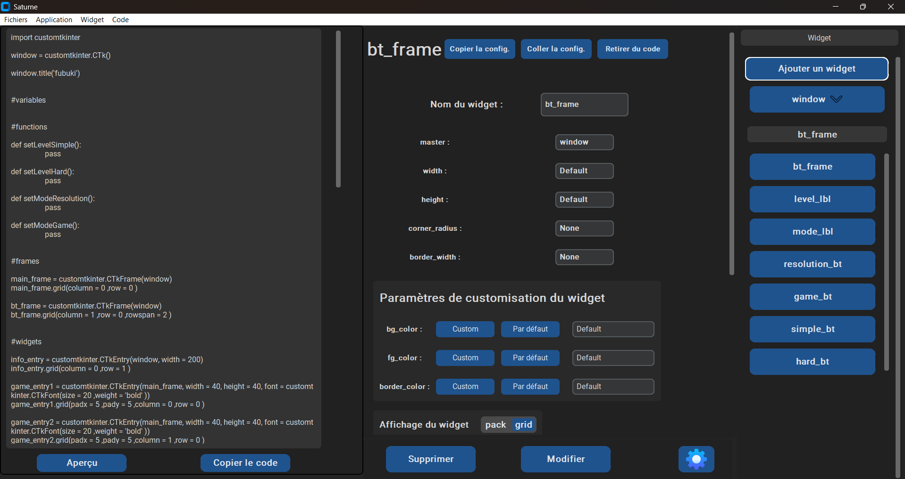
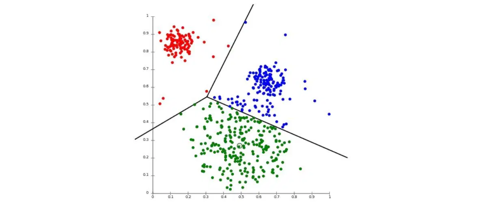
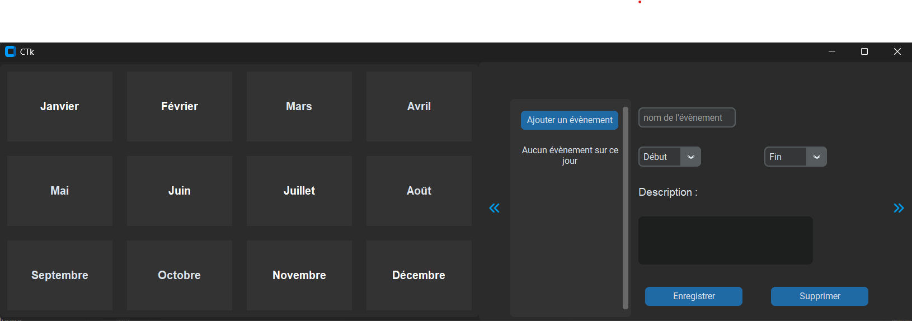

Saturne
Saturne est une application de génération de code, orientée sur la création d'interfaces.
Elle vient du projet créé pour le concours des trophées NSI, sur lequel j'ai continué le développement.
le code est découpé entre des fichiers d'interfaces, des fichiers de traitement des données,
et des fichiers de gestion de fichiers ressources.
L'application est passée par une phase de réflexion/conception, puis par une phase de développement, et enfin
par une phase de débugage/polissage
Technologies : Python, JSON
Compétences : Développement logiciel, développement python

Ant Sim
Ant Sim est un jeu de simulation de pseudo-fourmis reprenant le principe des vraies fourmis. On y retrouve des fourmis cherchant de la nourriture, des ressources, capables de se battre et pouvant mourrir de de vieillesse, de faim, ou au combat. On y retrouve aussi une IA "ingénieure" en charge de développer la colonie : création de nouvelles fourmis, aggrandissement des entrepôts, et création de défenses. Ce projet se développe au fur et à mesure du développement de mes compétences
Technologie : Python
Compétences : développement de jeux-vidéos, développement python, IA, programmation asynchrone en python
KNN
Développement de l'algorithme des K-Nearest-Neighbors et du K-means. J'ai développé ces deux algorithmes dans le cadre d'un projet de cours. Puis j'ai aussi créé un autre algorithme sur la base du K-means pour en améliorer ses performances. Pour tester les algorithmes, j'ai utilisé la libraire scikit-learn.
Technologies : Python, librairie scikit-learn
Compétences : Machine learning, développement python

source de l'image : bombaySoftware.com
Widget Calendrier
Création d'un widget calendrier pour la librairie CustomTkinter. Le Widget peut être seul ou accompagné d'une fenêtre d'ajout d'évènements et il est pleinement compatible avec les interfaces CustomTkinter.
technologie : Python
Compétences : Développement python, Librairie Tkinter et CustomTkinter

projet
descr
technologie :
Compétences :